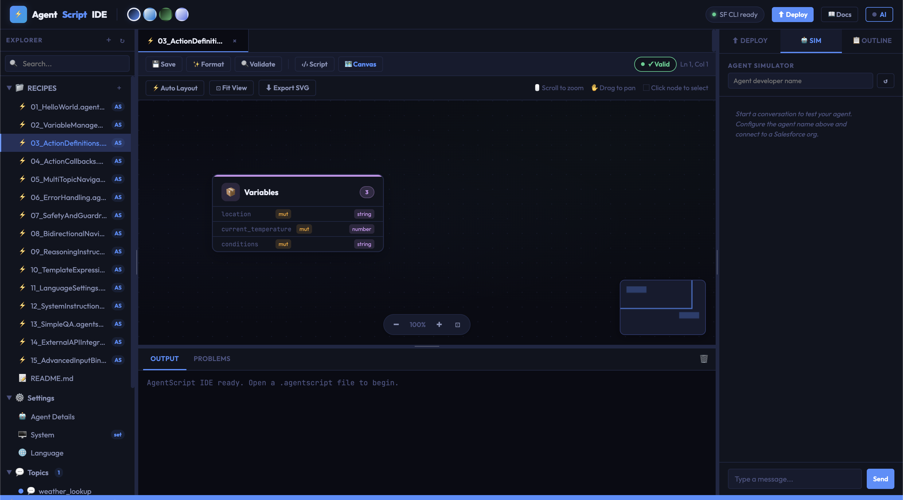
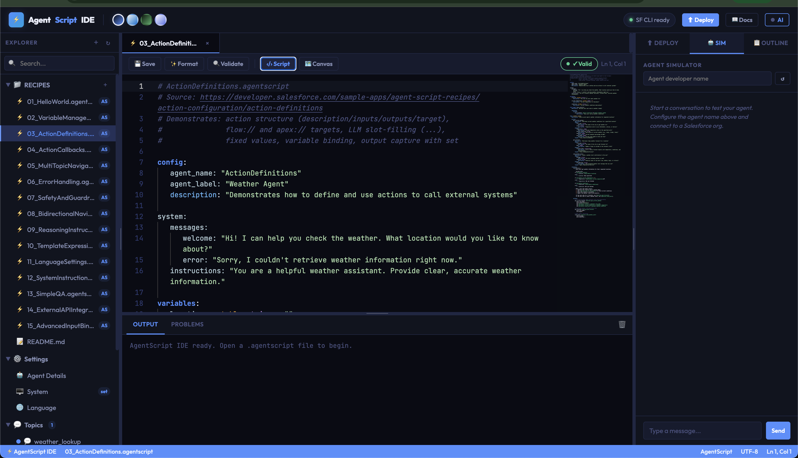
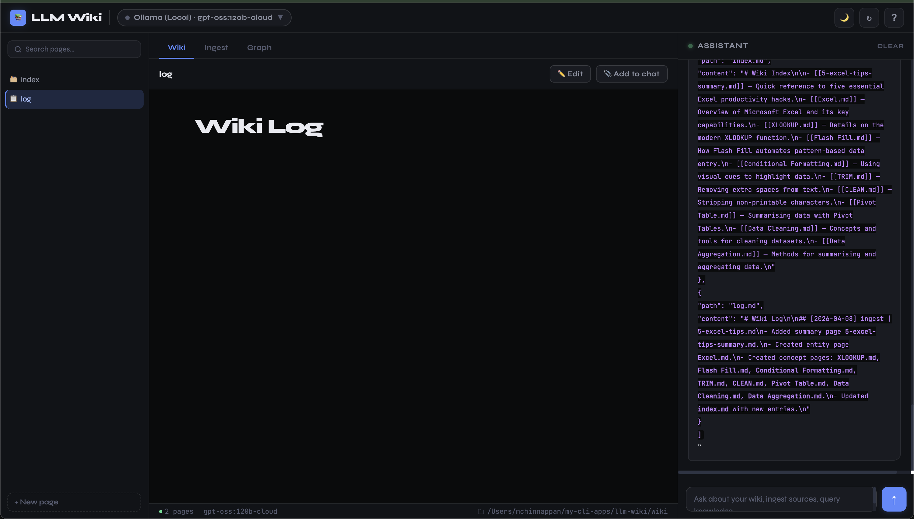

A pattern for building a persistent, compounding knowledge base of successfully implemented Salesforce Agentforce AgentScripts — so every new client engagement bootstraps from proven assets, not from scratch.
Every new client engagement starts with engineers rediscovering patterns from memory or scattered notes. Prior AgentScript implementations — hub-and-spoke routing, specialist transitions, safety guards, multi-topic navigation — live in individual developer heads or buried Jira tickets. Nothing compounds.
Each successfully delivered AgentScript is ingested into a persistent wiki. Entity pages, pattern pages, skill.md links, and client context accumulate. When a new client needs Agentforce, the LLM searches the wiki and surfaces exactly the right prior art — fully cross-referenced, with known pitfalls already flagged.
The key insight: The wiki is a persistent, compounding artifact. Patterns are compiled once and kept current — not re-derived from scratch on every client call. The cross-references, known working configurations, skill.md associations, and gotchas are already there when the next engagement starts.
Your curated collection of delivered AgentScript files, client context docs, skill.md files, and meeting notes. Immutable — LLM reads but never modifies.
LLM-generated markdown directory. Pattern pages, entity pages (topics, variables, actions), client pages, concept comparisons, synthesis. LLM writes; you read.
The configuration file that makes the LLM a disciplined wiki maintainer. Defines conventions, ingest workflows, query patterns, and AgentScript-specific vocabulary.
Drop completed .agentscript + skill.md files into raw/scripts/
LLM reads script, discusses key patterns with you
LLM writes summary page, updates pattern pages, entity pages, skills index
A single script may touch 10–15 wiki pages. Appends to log.md.
Describe client requirements: industry, complexity, topic count, specialist routing needs
LLM reads index.md, searches wiki for matching patterns and prior implementations
Returns recommended pattern, starting .agentscript skeleton, skill.md list, known gotchas
Answer gets filed back to wiki as a new bootstrapping analysis page
Find contradictions between pattern pages (e.g. conflicting variable naming conventions)
Detect orphan pages with no inbound links; flag stale claims
Suggest concepts mentioned but lacking their own page (e.g. new AgentScript actions)
Recommend new sources to ingest (Salesforce release notes, new recipe patterns)
Every wiki page listed with a link, one-line summary, pattern tags, and skill references. The LLM reads this first on every query to find relevant pages. Organized by: patterns, entities, skills, clients, synthesis.
Append-only. Records ingests, queries, lint passes. Parseable with grep. Gives the LLM a timeline of what's been done and when.
The schema is the configuration file that transforms a generic LLM into a disciplined AgentScript wiki maintainer. You and the LLM co-evolve it over time. Below is a starter schema.
The AgentScript IDE you're building is the natural home for the wiki. The IDE on the left, the wiki graph on the right — the LLM edits wiki pages as you work on scripts in real time.
Browse the wiki alongside the script editor. Navigate pattern pages, entity pages, skill references — all in-IDE.
Drop a completed script into the Ingest panel → LLM auto-processes it into the wiki. Progress visible inline.
"New Client" wizard: describe requirements → LLM queries wiki → returns recommended skeleton + skill.md list.
Interactive wiki graph — what patterns connect to what entities, which clients used which skills. Powered by the wiki's wikilinks.
Extend Canvas to render wiki relationship diagrams, not just variable flows.
At <50 scripts, index.md is sufficient for the LLM to navigate. As the wiki grows, consider qmd — a local search engine for markdown with hybrid BM25/vector search and an MCP server the LLM can call as a native tool. Or vibe-code a simpler grep-based search script.
Every skill.md used in a delivered script gets its own wiki page in wiki/skills/. The wiki page adds: which clients used it, which patterns it appears in, known edge cases, and any evolution of the skill across versions.
The Salesforce AgentScript Recipes repo (shown in the IDE screenshots) is itself a source to ingest. Process each recipe into a pattern page. This gives you the canonical Salesforce patterns as a baseline before any client work is ingested.
Structure log entries with a consistent prefix so they're unix-parseable:
## [2026-04-08] ingest | ScriptName
Then: grep "^## \[" log.md | tail -5 gives last 5 events. Useful for IDE status panels.
The tedious part of maintaining a knowledge base is the bookkeeping — updating cross-refs, flagging contradictions, keeping summaries current. LLMs don't get bored and can touch 15 files in one pass. The wiki stays maintained because the cost of maintenance is near zero.


